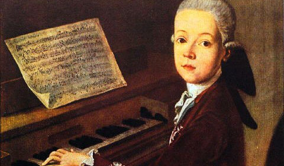
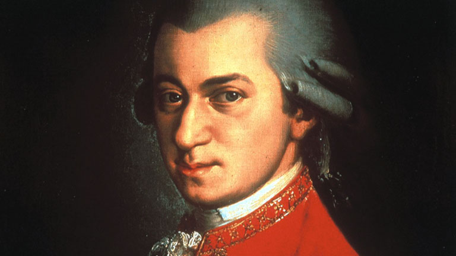

Wolfgang Amadeus Mozart
Wolfgang Amadeus Mozart was one of the greatest composers of all time. Mozart's best music has an irresistible charm, and can express and evoke many different emotions. His operas, especially his later efforts, are brilliant examples of high art, as are many of his piano concertos and later symphonies. Even his lesser compositions works feature his astounding talent as a composer.

Mozart was born on January 27th, 1756 in Salzburg, Austria to a middle class family. His father Leopold wasted little time in introducing music to his son. At an early age, Mozart showed a high interest in music. During this time Wolfgang composed several minuets and sonatas as early as the age of 4. At age 6, Wolfgang embarked on a series of European tours. They traveled extensively through the courtrooms and palaces of Europe in which he was known as a child prodigy. During their touring Wolfgang began writing his first symphony at age 8. During this time Mozart began to write 2 operas called Ascanio in Alba and Lucio Cilla. Archbishop Hiernoymus von Colleredo appointed Wolfgang as assistant concertmaster with a modest salary. During this time Mozart produced music of varying genres including violin concertos, operas, symphonies, sonatas, and string quartets including his overly ambitious Piano Concerto #9. During this time Mozart married Fridolin Weber's daughter Constanze, on August 4th, 1782. Enjoying profits from the successful opera The Magic Flute, along with revenue from music publishing and numerous concerts, allowed Mozart and his family to lead a wealthy lifestyle.

Between the years of 1781 to 1785, Mozart was most fruitful in his musical ambitions. He wrote a multitude of high quality music that would overshadow most of his previous compositions including his majestic Symphony No.35 in D major. Unfortunately, Mozart's luxurious lifestyle would give way to mounting debts. Two operas in particular, kept Mozart from going under; The Marriage of Figaro, and Don Giovanni proved to be sensational hits in Prague and continued to bolster Mozart's reputation. In 1787, Emperor Joseph the Second appointed Mozart as his chamber composer that entitled Wolfgang to compose only dances for parties in the palaces. Mozart soon, however, left this position and moved out of Vienna into nearby suburbs looking to revive his great successful musical campaign just a few years prior. During this time Mozart fell in a deep depression, but went through a time of personal healing a year or two before his death. It was in these last years of Mozart's life that he composed the best symphonies and sonatas of his career including Symphonies 39, 40, and 41. Then Mozart fell ill and died on December 5th, 1791 at the young age of 35.
Mozart's style is distinct and unique. With an irresistible charm, Mozart's compositions are well known by almost everyone around the globe and many are easily recognizable He is characterized for having a light tuneful sound in many of his works, but many later compositions started to reflect that of Bach's counterpoint. Mozart's late musical style paved the way for the Romantic Period and would later influence many composers of that time period.